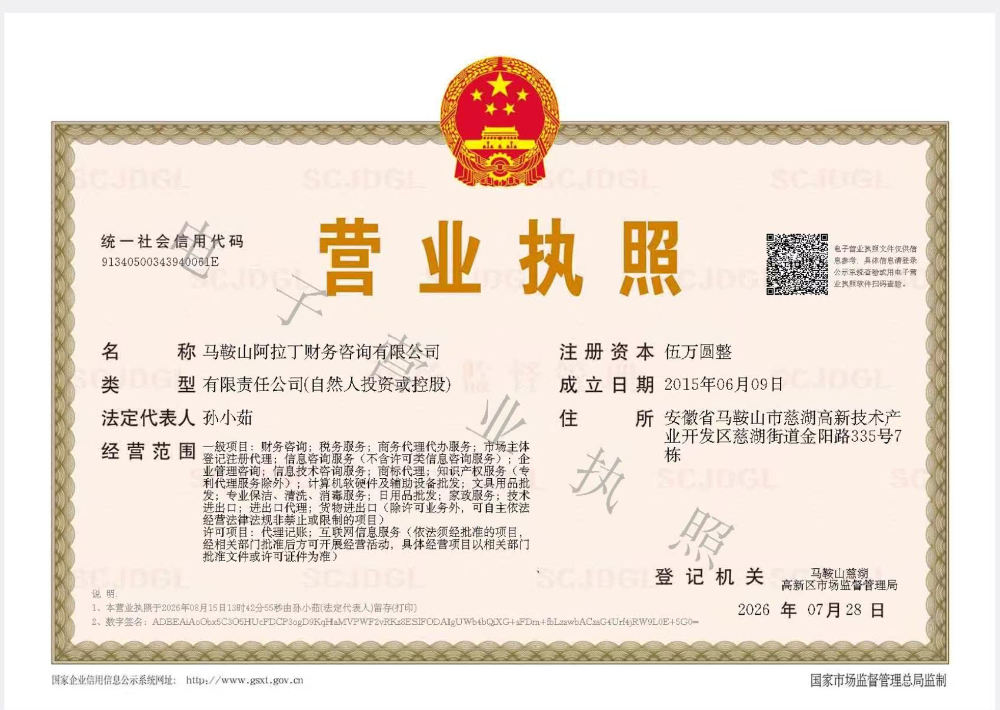
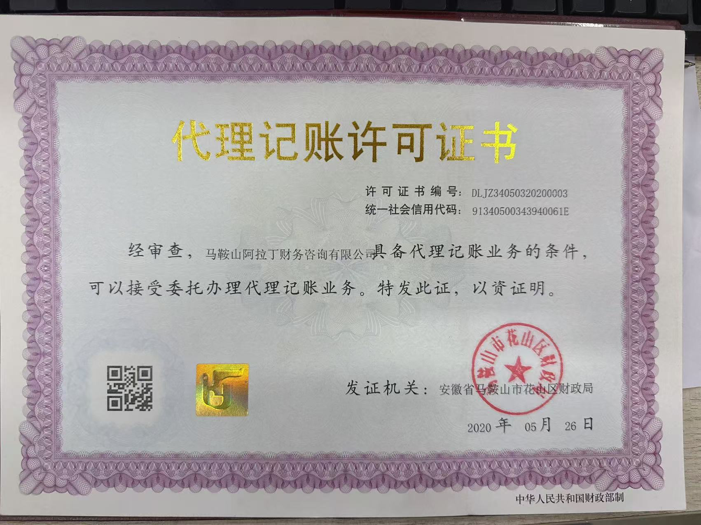

马鞍山阿拉丁财务咨询有限公司营业执照
马鞍山阿拉丁财务咨询有限公司依法登记设立，为企业提供财务咨询、税务服务、工商服务等支持。
以专业财税服务帮助企业建立清晰、稳定、可持续的经营基础。
马鞍山阿拉丁财务咨询有限公司立足马鞍山慈湖高新区，专注为本地企业提供财税代理服务，尤其擅长外贸类企业财税业务。
我们服务本地多家外贸企业，熟悉马鞍山外贸财税相关政策，围绕外贸公司代账、进出口备案代办、出口退税申报和企业日常财税管理，提供一站式财税支持。
资质信息公开展示，方便企业在合作前了解马鞍山阿拉丁财务咨询有限公司的经营主体、代理记账许可和团队专业基础。

马鞍山阿拉丁财务咨询有限公司依法登记设立，为企业提供财务咨询、税务服务、工商服务等支持。

公司具备马鞍山财政局发放的正规代理记账机构资质，可接受委托办理代理记账业务，协助企业完成账务处理、纳税申报和资料归档。
团队配置税务师、中级会计师、初级会计师等专业人员，社保人员5名，能够为企业提供稳定、持续、规范的财税服务。
熟悉马鞍山企业服务环境，便于线下沟通和资料衔接。
从票据、账务到申报形成固定流程，减少遗漏和返工。
关注申报异常、发票管理和经营变动，提前提醒企业处理。